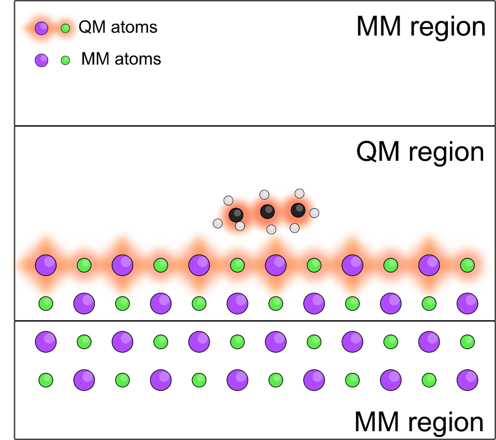

Matt Watkins - Research
Projects
AFM in solution

Excited states

Interfaces
Transport

About
Matt Watkins is a Senior Lecturer in the new School of Mathematics and Physics since April 2015 at the University of Lincoln UK.
Our group works closely with leading experimental and computational groups to develop simulation tools to understand and stimulate chemical physics at the nanoscale. Current interests are characterisation of solid-liquid interfaces. We are developing methods to simulate Atomic Force Microscopy in Liquids; Electron transport across interfaces; Electrochemistry; excited state processes.
People


Recent Talks

Talk at Psi-k workshop: Atomic scale materials microscopy: theory meets experiment 26-28 Jun 2017 York (United Kingdom)